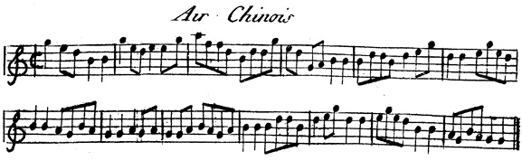
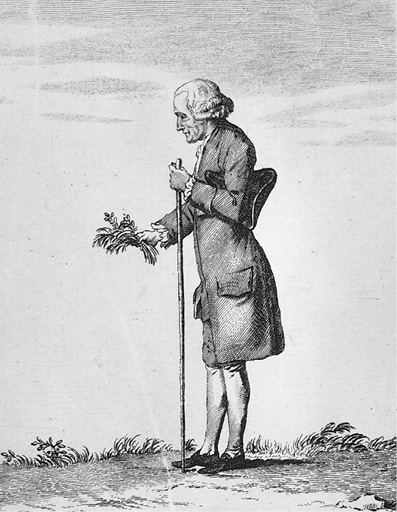
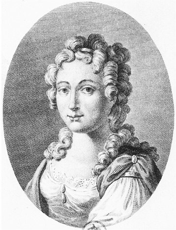
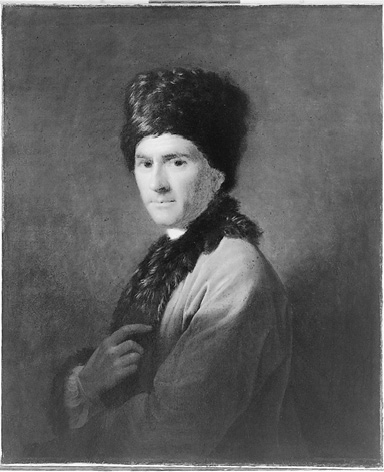
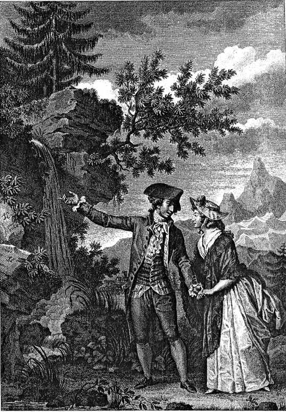

《新爱洛伊丝》对主人公的事件描述大约从1732年起跨越了几十年，其中的迹象表明，卢梭虚构了一个与自己年龄相仿的主人公——圣普乐。卢梭的自白清楚地表明，他特意赋予其故事中心人物细腻的情感和性格的弱点，这些都源于他的本性（《作品全集》第一卷，第430页；《忏悔录》，第400—401页）。同时，通过将圣普乐设定为一个居无定所的家庭教师，因而朱莉的父亲认为他的社会地位比朱莉低、不值得朱莉爱，卢梭塑造了一个被社会排斥的浪漫主义英雄，注定一生不幸。读者可以很容易地从主人公身上看到作者的影子。这种相似性，再加上小说中其他人物和现实生活人物之间许多其他表面上的相似之处，让世人不禁猜疑：卢梭18世纪的所有作品中最受欢迎的这部小说，是由他亲身经历的事件改编而成，以书信体——当时流行的情感小说的形式——用理想化的方式书写了其自传。对于小说中圣普乐、朱莉和沃尔马偶尔发生的三人姘居 ，以及引发他们之间关系发展的事件，更为准确的理解是，这些表达了卢梭在生活中极难表述且无法满足的深切渴望。有点像与同时代的狄德罗，他经常通过一种替代的方式来表达自己最强烈的情感，在表述自己想法的时候就好像在表述别人提出的主张一样。卢梭凭借他独具特点的生动想象力为他所在的世界，以及他只有在幻想中才可以控制的情绪，赋予了更加具体的形式。
当他开始构思他的小说，他说这主要是因为他沉湎于爱的时间已然逝去，泰蕾兹无法激发他的欲望，而对于满足欲望的希望在他中年逝去时已然枯萎。他让自己的想象带他进入“幻想之地”，一个九天世界，居住着最完美的生物，美德和美貌如神仙一般，而且忠实、完全可信赖，这是他在凡间的朋友所不具有的。正是由于他对这一“梦幻世界”的着迷，才使《新爱洛伊丝》得以面世（《作品全集》第一卷，第427—428页；《忏悔录》，第398页）。这部小说讲述了狂热爱情的秘密，卢梭后来希望这种爱情能成为打开索菲·德·乌德托内心的钥匙。有谣传称，卢梭迷恋索菲其实是由心怀嫉妒的德皮奈夫人策划的，再加上其他一些因素的影响，很快激发了他生活中最大的危机之一，包括他与狄德罗的决裂，以及最终与大多数巴黎朋友们的疏远。但不管怎么样，卢梭最终未能征服索菲，因而他通过想象，让圣普乐和朱莉相互勾引。他在《忏悔录》中声称，是索菲唤醒了他体内的“情欲”和“恋爱的狂热”，激发他创作了小说中最深刻的两封信（《作品全集》第一卷，第438页；《忏悔录》，第408页）：一封是关于沃尔马和朱莉隐居的隐秘果园，朱莉称其为“极乐世界”，另一封是关于圣普乐在沃尔马不在的时候与朱莉在水中及日内瓦湖岸共度一天（分别是第四章第11封信和17封信）。到1756年冬天，卢梭已经被他在6月创造的人物深深吸引住了，就像他在《忏悔录》中所说的，他对朱莉及其表妹克莱尔极为喜欢，就像第二个茶花女（《作品全集》第一卷，第436页；《忏悔录》，第406页）。次年，在一次并不重要的短暂会面后，索菲进入了他的生命并带来了颠覆性的影响，也激发了他将朱莉对自己的所有吸引力附着于他新伴侣的身上。他满心只想着索菲，因为他开始感觉到自己对一个真实的对象产生了不断加剧的震颤和倾泻而出的激情。
就索菲而言，尽管她也像卢梭一样为彼此的亲密陪伴所感动，但她却没有表现出同样的激情。卢梭写道：他们的叹息和眼泪交融在一起，因为两人都陶醉在爱情中，卢梭是为了索菲，而索菲却是为了她在外的爱人圣兰伯特；卢梭曾经单独见过圣兰伯特，并在那个时候已经与他结下友谊。因此，他对索菲无法得到回应的爱总是伴随着第三个人的身影，而这个人让索菲满腹心酸，她便将卢梭作为知己吐露自己的心事，这同时也让卢梭在心怀深深敬意爱着她的同时，无法追求以拥有她。索菲对圣兰伯特的全部渴望如病毒般在卢梭心头蔓延，他现在只能将加倍的激情倾注到朱莉身上，一个他全心塑造且可以占有的女人。他这样写道：索菲对他真正的爱是一杯有毒的甘露，他大口大口地饮用着（《作品全集》第四卷，第440页；《忏悔录》，第410页）。卢梭说，他们亲密相处的四个月，是他跟其他任何女人从未经历过的。他尽职尽责地度过了这四个月，以此来治疗自我否定，从而让自己的灵魂被强迫的纯真审慎所照耀。因而他在1757年10月给索菲写了一封不同寻常的信向她告白（《卢梭书信全集》，第533页），后来《忏悔录》中的一段文章便是以此为雏形。然而，当卢梭沿着安迪利山坡走向索菲的位于奥伯尼、距离他隐居地三英里的家时，他的感官被他期待已久的亲吻画面所燃烧，他的双膝颤抖，身体蜷缩在一起，并且无法转移注意力去想别的事情；他会达到高潮，然后抵达他无法获得的爱人的家，在想象力激发的狂喜消退后身心疲惫，而一见到她，他“无用的活力”又会被唤醒（《作品全集》第一卷，第445页；《忏悔录》，第414—415页）。
图22 柯罗画的乌德托夫人画像
如果说卢梭在他的小说中能够塑造一个消除了焦虑和挫折的世界，那么在他的其他作品中，他也同样通过清理那些他认为阻碍人类自我实现的难以对付的机构和令人费解的信仰所造成的道德观，来寻求幸福快乐。他在《新爱洛伊丝》中所构建的幻想世界，既因戏剧性的冲突而脆弱，又因朴实的优雅而熠熠生辉，与之一致的是他在其他作品中对不透明、压抑的世界的解构，而他的小说中的理想化世界是其替代。在与《新爱洛伊丝》同时期的作品《致达朗贝尔论戏剧的信》中，卢梭表达了很多相似的主题，像日内瓦那样的共和国所举行的健康宜人的娱乐活动，在户外、天空下举行欢乐的庆祝活动；像巴黎那样的大城市居民进行的有害的娱乐活动，人们心怀不轨、无所事事、懒惰消沉。卢梭将此进行了对比，而后转向关注舞台上所上演的虚伪的消遣，企图寻求快乐。他说，让观众成为他们自己的娱乐，每个人都被赋予一个投入演出的角色，而不仅是一个被动的目击者，去热爱他人中的自己，这样所有人都会更好地团结在一起（《作品全集》第五卷，第53—54、114—115页；《致达朗贝尔论戏剧的信》，第58、125—126页）。莎士比亚的《皆大欢喜》中忧郁的贾克斯也许会为“整个世界是一个舞台”而感到遗憾，但让-雅克却会因此而感到高兴。
在卢梭的《论不平等》中，他曾经塑造了一个野蛮人的形象，异想天开地清除了他身上的社会杂质和污浊，就像他清除了朱莉身上关于女性的世俗缺陷一样。在《爱弥儿》一书中，他随后通过对真实人物的抽象化，创造了一个同样虚构的牧师，牧师对自然中一个并不神秘的上帝的升华，被作为一种精神净化，把真正的宗教信仰从世俗教堂的所有仪式的虚饰中净化出来。为了回应那些认为他只住在幻想世界中从而认为世人“总处于偏见之地”的读者们，卢梭在《爱弥儿》第二卷中补充提出，“现实世界有其局限性，而想象的世界是无限的”（《作品全集》第四卷，第305、549页；《爱弥儿》，第81、253页）。他的大多数主要著作，无论是小说还是非小说，都见证了詹姆士·波斯威尔在1766年10月15日写给亚历山大·德莱尔一封信中的评论，即卢梭的想法“完全具有远见，不像是他这个地位的人应该有的”（《卢梭书信全集》，第5477页）。“不由自主的兴奋”“吞噬一切的激情”“极端的狂热”“神圣之火”“崇高的谵妄”“圣洁的热情”，这只是截取自他第四封《写给索菲的信》（《作品全集》第四卷，第1101页）中一段文字的表述，引发我们的心智脱离了尘世。他观察到，当我们的理性缓慢爬行时，我们的精神在翱翔。没有任何一位18世纪的作家能像他那样，通过强烈的感情、令人痴迷的梦想和天马行空的想象，在启蒙时代的黄昏，掀起一场浪漫主义运动，尤其在德国和英国。
甚至在卢梭还没有全心倾注于他那些最负盛名的主要作品之前，卢梭的流浪者的梦想就已经吸引他向音乐方向发展，这是他生来就感兴趣的题材。他在《忏悔录》和《对话录》中都坚持对这一主题进行探讨（《作品全集》第一卷，第181、872页；《忏悔录》，第175页）。在他对法语不适合音乐发音的反思中，以及在他对拉莫关于旋律以和谐为主导的主张中，他认为音乐曾经是人类自然语言中充满热情的表现形式，毫不做作、朴实自然；他沉醉在其发音中，就仿佛朱莉可爱的样子浮现在他心头。卢梭用抑扬顿挫的词句自信地歌唱，没有管弦乐的粉饰和歌剧的宣叙调，清晰的音乐声线在某些方面是最平民主义的幻想画面，让他想起人类最古老的自我表达方式和已然失传的未被改造的原始语言。除去假装西方音阶的主音和下属音都存在于各种音乐形式中，其最初的本质在他的哲学中可以从根本上追溯到诗歌的根源；它从一种古老的艺术向现代科学的逐渐演变，可以根据他在其他方面对待人类自我驯化的方式得到重建。
但是，现代音乐和西方音乐的起源并不像不平等的起源那样久远，因此卢梭能够用远没有那么多推测意味的措辞来评估其发展过程。在对《百科全书》的贡献中，他已经在音乐和音乐流派，特别是当代音乐理论领域表现出了真正的掌控力，并在他的文章中持续探讨这些主题。《伴奏》《不和谐》和《基础低音》在很大程度上阐述了拉莫关于和声转调和单个音符的泛音共振的看法，这促使狄德罗和达朗贝尔在《百科全书》第六卷提出反对，认为拉莫恶意诽谤了一个很大程度上忠实于自己原则的人。即使在《音乐辞典》中收录的那些文章的加长版中，卢梭仍然承认拉莫1722年出版的《和声学》对他产生了深远的影响。但是为了赶上狄德罗最初的交稿期，他只用三个月就完成了最初的文章，并一直在寻求机会对这些文章进行补充，从而能够详细阐述他与拉莫观点上的差异，并进一步阐述他之前未能思考的一些主题。
《音乐辞典》被认为是一部参考性著作，但它并没有像卢梭离开巴黎后在艾米特从事的其他大多数项目那样，激发他的幻想。出于这个原因，他在《忏悔录》中写道：他每天散步进行遐想时都把它放在一边，除非在下雨天，他才会坐在屋里，思考关于《音乐辞典》的内容（《作品全集》第四卷，第410页；《忏悔录》，第382页）。然而，这仍然是他详细探讨了历史、技术和理论主题的最主要的作品之一，不仅让拉莫的复杂学说令基础的读者更容易理解，就像达朗贝尔之前的尝试一样，而且也在他的文章《乐符》中针对古代、中世纪和现代的乐谱实践提供了完全修正过的、更为翔实的评论；他的文章《歌剧》中针对抒情剧历史新写的小短文（在《百科全书》中标题被改为“抒情诗”，被归在格林那部分）；文章《系统》里针对塔蒂尼音乐理论的分析。查尔斯·柏尼曾将卢梭的歌剧《乡村卜者》翻译成英文作品《狡猾的人》，他在自己的作品《音乐通史》中为卢梭辩护，反对《论法国音乐的通信》和《音乐辞典》的批评者。而卢梭本人针对格鲁克的歌剧《阿尔切斯特》（1767年）的评价显然褒贬不一；据报道，他认为格鲁克异常出色的《伊菲吉妮娅在奥利斯》（1774年）是用法语写的剧本，这也许最终证明了他的论点：用法语歌词创作音乐是不可能的。
然而，即使是在他的《音乐辞典》中，他也对那些在1740年代末和1750年代初首先激发他想象力的思想进行了重申和补充。在新文章《素歌》中，卢梭评论称，当基督徒开始建立教堂唱赞美诗时，古代生机勃勃的音乐便失去了所有的活力。他受《圣经》和其他古典资料，尤其是毕达哥拉斯学派的影响，在文章《音乐》中补充道：我们知道天地间一切法律及对美德的倡导曾经被唱诗班用诗歌吟唱过，没有比这个更有效地教授人们爱与美德的方法了。这篇文章回顾了柏拉图的《法律篇》，并重复了他在《百科全书》中发出的评论。他在文章《模仿》和《歌剧》中声称，一切可以引发想象的东西都源于诗歌，而诗歌也是音乐的起源。在两篇文章中，他都对绘画的情感表现力表现出缺乏欣赏和辨识力，与他对音乐的敏感度形成鲜明的对比，这也许是他与狄德罗在审美判断上最大的差异。卢梭指出，绘画只激发我们的视觉感受力，音乐唤醒耳朵的觉察，描绘出甚至无法用眼睛看到的对象，例如，夜晚、睡眠、孤独和寂静。噪声有时会产生完美的宁静，而无声却会产生噪声的效果，就像人们会在单调的演讲中入睡，却能清楚地感知到演讲停止的那一刻并醒过来。卢梭一生中持续保持着对音乐的兴趣，原因尤其在于，卢梭在大约1750年的时候决定开始将音乐记录成乐谱，从而获得一些固定收入；直到他生命结束前，这都一直是支撑他作为一个作家的为数不多的谋生手段，可以使他下定决心拒绝所有恩惠或养老金，从而避免可以夺取其自由的债务。在极端心烦意乱的状态下，他最终在1767年春天逃离了英国。不过，他被休谟说服，接受了比他更为疯狂的国王乔治三世的礼物，却在适当的时候反对其原则，白白接受了五十英镑。在让·巴普蒂斯特·杜赫德于1735年所写的《中华帝国志》中所改编的“中国曲调”的手抄本、韦伯的《图兰朵序曲》和亨德米特的《主题交响变形曲》中，他的《音乐辞典》都有出现。
在接下来的三年里，卢梭再次在法国成了流浪者，一个命运的人质。他以“雷诺”先生的名义，在管家的陪同下，匿名旅行，据说管家是他的妹妹。启蒙运动时期最直率的真理爱好者，长期以来一直致力于揭露虚伪，现在自己却乔装打扮，从诺曼底边界的特莱，到多菲内的布尔冈和蒙昆，再到里昂，最后到巴黎，沿途参观华伦夫人位于尚贝里的坟墓，随后不久就与泰蕾兹结婚。他当时的主要资助人孔蒂亲王——一个实际上伪装成 保护者的监视者，让他的旅途更为隐蔽。而卢梭却被他试图逃避的当局忽视，因为他们认为他是一个荒谬的人物，而并非危险人物。正是在这一时期，他把心思转到植物学上，这是他晚年最大的爱好。从蒙特默伦西乘坐飞机抵达牟特耶后，他结识了著名的植物学家让·安托万·德伊维诺瓦，并在那里与匈牙利冒充男爵的伊格纳兹·德·萨特斯海姆一起在周围的乡村进行了长时间的远足研究植物。伊格纳兹·德·萨特斯海姆是那个时代的皮埃尔·洛蒂，他的一生比卢梭在《新爱洛伊丝》中幻想的还要虚幻。卢梭在斯塔福德郡收集了蕨类植物和苔藓。但直到1760年代末，在特里、里昂、格勒诺布尔、布尔金和蒙昆等腹地，卢梭要么独自一人，要么和各种各样的同伴一起，才把大部分时间投入对植物的研究中，偶尔会让人怀疑他是个巫师。

图23 《音乐辞典》中的“中国曲调”（巴黎，1767年）
1770年夏天，他一回到巴黎，就恢复了每天早晨抄录音乐的工作，下午他会出城进行长途散步并采集植物。在1771—1773年间的不同时期，他起草了八封关于植物主题的长信给马德莱娜·德莱赛尔夫人。早前他在里昂见过她并对其产生好感，马德莱娜·德莱赛尔夫人希望激发她四岁的女儿天生的好奇心，鼓励她对植物感兴趣。在接下来的四年中，卢梭又给其他许多不同的通信者写了十六封关于相似主题的信件。这些信件和先前的八封信件（在1782年与卢梭的全部著作一起出版）引起了剑桥大学植物学教授托马斯·马丁的兴趣，他担任主席六十三年时间，至少在这段时间内，他对这些信件进行了翻译并使用在自己的课程中。画家皮埃尔-约瑟夫·雷杜德也使用了这些信件，并为卢梭在19世纪初出版的植物学著作豪华版作了配图。大约在这个时候，卢梭还编纂了一本植物学术语辞典，但最终未完成。他还继续收集了之前就已经开始的植物标本，尽管其中最大的一部分共十一册，在第二次世界大战中与柏林的植物博物馆一起被销毁，但其中的一些得以保留下来。
卢梭对植物学的兴趣对一个行走时才能最为活跃的人而言似乎是一个明智的职业选择，正如他在《忏悔录》中（《作品全集》第一卷，第410页；《忏悔录》，第382页）所说的那样，他的大脑在他双腿行进的时候才能运作。大自然的这个上了年纪的孩子，终于可以在这里与创造的伟大景象进行直接交流。在这之前，他一直怀着敬畏的心情，就像一个更年轻的爱弥儿，心满意足地站在那里，他的力量和意志处于平衡状态。这个题材拥有明快的色彩和芳香，从而可以填满他的想象。那是一种植物爱情的田园牧歌式的乐园，一个世纪以前，诗人安德鲁·马维尔也曾为其着迷。在《一个孤独漫步者的遐想》漫步之二中，卢梭回想起在巴黎附近的梅尼蒙当和夏罗内之间的草地上，数着那些开花的植物时所感到的甜蜜愉悦，这些地方现在一部分已经成为拉雪兹神父公墓（《作品全集》第一卷，第1003—1004页；《一个孤独漫步者的遐想》，第36—38页）。漫步之七主要描述了“大地衣着”的树木和植被，他品味着山间峡谷的记忆，在那里发现了海甘蓝和仙客来，并在地球上如此隐蔽的一个角落听到了大角猫头鹰和雄鹰的叫声，以至于当他坐在犹如枕头般的石松植物 上时，他梦想着自己偶然发现了宇宙中最原始、最遥远的避难所。就像是第二个孤独的哥伦布，他来到了一个就连迫害他的那些人也无法找到的隐蔽所（《作品全集》第一卷，第1062、1070—1071页；《一个孤独漫步者的遐想》，第108、117—118页）。现在，回忆起1764年左右在牟特耶附近的植物考察，这里是卢梭自己的极乐世界，最初由1757年索菲·德·乌德托进入他的生活所鼓舞，后来在《新爱洛伊丝》中以极为相似的文字描述朱莉的秘密果园为“最野生的最孤独的自然角落”（《作品全集》第二卷，第471页；《新爱洛伊丝》，第387页）。他对索菲的爱从一颗迷人的黑暗之心转向另一颗，通过模仿自己的艺术来倒推自己的生活。从对肉欲的唤起，到小说，到变换画面的记忆。卢梭在这方面及其他许多方面尊崇18世纪的普鲁斯特，使得他的植物学和遐想在一个声音中产生共鸣。

图24 马耶尔作品《采集植物的卢梭》
卢梭并非一直喜欢研究植物。他提到，如果他屈从于内心的诱惑，追随克洛德·阿奈—华伦夫人在尚贝里雇用年轻草药医生和他一起分享她的爱，他自己就可能成为一个伟大的植物学家。但是，当时他对植物学的魅力一无所知。他在《忏悔录》《一个孤独漫步者的遐想》，甚至在《植物学辞典》的序言中提到，他受到大众偏见的影响，以为这是一门像化学或解剖学一样的与医学或药理学有关的科学，只适合药剂师研究（《作品全集》第一卷，第180—181、1063—1064页；《作品全集》第四卷，第1201页；《忏悔录》，第175页；《一个孤独漫步者的遐想》，第109—110页）。他后来才知道，事实并非如此。他还能在其他什么科学领域里消磨时光呢？他怎么可能追逐动物，只是为了用武力制服它们，如果他能抓住它们，然后为了了解它们如何奔跑而解剖它们？如果太虚弱的话，他无疑会选择制作蝴蝶标本；如果太慢，他可以选择研究蜗牛和蠕虫；然而，那些臭气熏天的尸体、可怕的骷髅和令人厌恶的气味都不适合他。他也不希望借助仪器和机器来研究星星。但是明亮的花朵、凉爽的树荫、小溪、树林、草地和绿色的林间空地净化了他的想象——他在《一个孤独漫步者的遐想》漫步之七中写道。植物本来就应该自然放置在人类能够触及的范围之内，它们在人的脚下拔地而起，而人的思想早已扎根于此（《作品全集》第一卷，第1068—1069页；《一个孤独漫步者的遐想》，第114—115页）。

图25 勒鲁于19世纪雕刻的华伦夫人像
卢梭在《植物学辞典》中承认，对植物细致而严谨的研究当然不能与激发愉悦感觉相混淆（《作品全集》第四卷，第1220—1221页）。按照他的理解，植物学本质上是一门分类学。他在《一个孤独漫步者的遐想》中评论道，植物学虽然不一定要解剖它所研究的对象，但要设法对它们进行分类，并确立它们内部组织的用途。因而他在《植物学辞典》和《植物学通信》中都特别关注水果的组成部分和鲜花的花蕊、花萼和植物的圆锥花序。他从几个专家那里学习了这些部位的功用，尤其是18世纪杰出植物学家林奈的《自然系统》《植物学哲学》《植物界》，卢梭曾经与他书信往来；还有林奈的主编之一约翰·安德斯·穆雷的一篇文章。卢梭有时候会把一种植物或器官的描述与其他植物或器官混淆，有时他也会误解他所借用的原理。也许是因为，与研究相比，他更喜欢研究植物。此外，他从未想过植物也可以针对其自然或人工种植的历史进行研究，正如布丰在关于物种退化的评论中所追寻的那样。这让他颇为钦佩，并在《论不平等》中对人类的发展进行了论述。在植物学研究中，如果不是为了研究人类本性，卢梭的典范应该是林奈，而不是布丰。然而，他的灵感来自一个人独自在户外徒步跋涉赞叹大自然神奇之时。他在《植物学》一书中写道（《作品全集》第一卷，第1069页；《一个孤独漫步者的遐想》，第115页）：对于无所事事、孤独寂寞的人来说，这是最为理想的研究课题。
由于与社会的疏远，独处给卢梭带来了自由遐想的自由，从而让他乐此不疲，但植物并非他独处时所专注的唯一领域。在他生命的最后几年里，还有另外一个主题对他的吸引力更大，因为这是不可逃避的，而且为其反思和研究的一切提供了一个批判性视角，这就是他自己。卢梭声称，在1760年左右，他首次考虑撰写自传。到1765年，他停止了几乎十年前在艾米特开始创作的所有主要作品，无论是在印刷、准备出版，还是已经停止创作的；他转而潜心创作《忏悔录》并汇集了他过往的大量信件，包括信件的副本或他保留下来的信件草稿。他之前的一些朋友了解他的态度、他的口才及他的偏见，知道自己一定会被他中伤，因而先发制人开始对其进行伤害。德皮奈夫人或许是其中的第一个，此后也没有人像她这样，给卢梭提供最初的保护，而她的关爱换回的却是卢梭对她不公平的指责，说她表里不一、背信弃义。她最初抨击卢梭对索菲的迷恋所采取的不明智行为，并没有让她免受卢梭对其进行恶毒的指控，但是她对卢梭的失礼和侮辱进行了有力回击。在狄德罗的陪同下，她要求并得到官方同意，禁止卢梭在回到巴黎后向公众朗读《忏悔录》的手稿。她去世前在文章里写道，在格林和狄德罗的协助下，她重新集合甚至重写了她跟卢梭分开期间的信件。她在自己虚假的回忆录中的描述，使卢梭在他们的整段关系中，显得背信弃义。她的回忆录在1818年出版，名为《梦特朗夫人的故事》。卢梭的敌人采取了各种各样的策略来诋毁他，一方面是为了竭力保护自己免受其恶意诽谤中伤，另一方面也是出于对他真正的、越来越强烈的蔑视，因为他们震惊地发现卢梭的虚荣毫无底线；这不仅让卢梭确认了最初对他们品性的怀疑，还确认了他们对自己阴谋诽谤的怀疑。在西方文明史上，没有哪个重要人物像卢梭那样将轻率和邪恶意图如此混淆，导致了不断恶化的可怕后果。
卢梭在1772—1774年间起草了《卢梭：让-雅克的法官》，其副标题《对话录》更为人熟知，在书中，他完全放任了自己真正可怕的偏执。他必须被锁链铐牢，以免他把农民吃掉。卢梭说，他自己有一个对话者叫“法国人”（《作品全集》第一卷，第716页）。既然他恶毒的文字如此让人害怕，那些对这个可怕的厌世者如此忧虑的先生们，又怎么会如此孜孜不倦地密谋不断纠缠他呢？（《作品全集》第一卷，第725页）在试图从外部对自我进行探讨时，卢梭构造了一个陌生的形象。他既无法恢复其自发的感情，也无法建立他曾经真实的动机，因为将其排除在作者身份之外，就无法了解其个性，而他现在又不可避免地将自己作品的主题的差别区分开来。《对话录》计划于1780年在塞缪尔·约翰逊的出生地利奇菲尔德出版。与卢梭的其他作品相比，《对话录》的构想更为疯狂地凸显理性不同寻常的一面，卢梭试图通过毫无阻碍的方式将文字传递给人类，试图通过将原稿放置在巴黎圣母院的圣坛上，来将其交给上帝，却发现唱诗班的铁丝架已经被锁，他对世界的呼吁因而胎死腹中，甚至上帝自己也来反对他。近年来，《对话录》尤其引起了米歇尔·福柯的注意，福柯在后续出版的现代版中为其作序。但是时至今日，很少有人阅读这本书，而且更少有人能不带痛苦地阅读它。

图26 拉姆齐画的卢梭画像
卢梭的最后一部重要著作《一个孤独漫步者的遐想》开始创作于1776年，直到他去世仍未完成。这部作品却有着完全不同的性质。它的开篇是他所写过的最凄美的一段话，捕捉了清除所有焦虑后的生活中的苦难，看上去像是全书的结尾：回想起以前的一切，“我就这样在世上落得孑然一身，除了我自己，再没有兄弟、邻里、朋友，再没有任何人际往来。最合群、最富爱心的人啊，竟然被众口一词地排斥在人类之外”（《作品全集》第一卷，第995页；《一个孤独漫步者的遐想》，第27页）。在一系列十次漫步中，最后回归他挚爱的妈妈 以及年轻时与他母亲共同享受的田园般的平静。卢梭一一列举了他在其他作品中涉及的关于他与社会疏远的主题，描绘了一个老人游荡的思想，现在他所有的能力恢复了，永远螺旋式向后行进。这些漫步中的第七次、第九次，尤其是第五次构成了作品的精神中心：第七次漫步展现了他那植物极乐世界的荒野，第九次漫步表达了他对幸福反复无常的哀痛，第五次漫步回忆了他在隐世岛屿上的水中幸福——实际上包含了卢梭遐想的田园、英雄及唱诗班的交响曲。在第九次漫步中，他试图找借口遗弃自己的孩子们，并描述了他性格中的少年冲动，以及他一看到幸福面孔就无法抗拒的喜悦。但在整个漫步中，他对自己的命运采取了一种悲观的听天由命的态度，坚持认为我们所有的幸福计划都是幻想，没有什么方式能令人永远保持满足。
在第五次漫步中，他以更强烈的信念提出了类似的感想。他说：“这个地球上的一切都在不断变化”，我们的感情被附着到我们外部的事物上，不可避免地跟随着这些事物改变或消失，我们世俗的快乐不过是转瞬即逝的产物（《作品全集》第一卷，第1046页；《一个孤独漫步者的遐想》，第88页）。然而，在同一次漫步中，他回忆起1765年9月从莫蒂耶出发的航班，当时他在比安湖中间的圣皮埃尔岛上找到了避难所。那里让他脑海里浮现出一个庇护天堂的画面，那么美丽，他可以描写草地上的每片草叶和覆盖岩石的每一块青苔。他在那里度过下午的时间，探索各种柳属植物、春蓼属植物以及各种各样的灌木丛，或者伸展着躺在船上，随意漂流到水流带他去的任何地方，“沉浸在一千个朦胧却又令人愉悦的遐想中”——一个有着如此美妙幸福的胜地，他愿意一辈子住在那里，“一刻也不想去别的地方”（《作品全集》第一卷，第1042—1044页；《一个孤独漫步者的遐想》，第83—85页）。正如他的第七次漫步将朱莉的极乐世界转移到他认为曾经是他自己的过去一样，他的第五次漫步也因此将虚构的一日游带到了日内瓦湖畔。圣普乐也以同样惊人相似的细节将其描述为“他一生中经历过的最生动的情感的一天”（《作品全集》第二卷，第521页；《新爱洛伊丝》，第428页）——在一个天堂岛屿，大自然将其与当代文明制造的混乱完全隔离。通过遐想来逃避生活中的世俗危机，卢梭能够化解回忆与创作之间的一切差异。想象力承载着他，并带他进入一个纯粹的极乐的天国，正如他在给马勒塞尔伯的第三封信中所描述的那样，他可以居住在另一种完全宁静，尤为适合他的世界。

图27 卢梭作品布贝尔版本中的《爱弥儿》插图，由穆罗·勒热纳绘制的《自然向我们展示万物的宏伟》
在卢梭的主要著作及其所涉及的各个学科中，他试图通过消除阻碍其实现的所有体系来使这些理想得以实质化。通过触动人心的否定过程，他能点亮以下领域：不平淡的语言、未经修饰的音乐、去除社会的人性、没有老师的教育、没有剧院的城市、没有统治者的国家、没有教堂的神圣存在。通过这样的回归，卢梭不仅在人类自由不受束缚的情况下对人类的自我实现提出了不同的观点，也更戏剧性地从他自己的启蒙时代中解脱出来，似乎不像他那个时代的其他主要思想家那样，受到那个时代话语的预设和惯例的限制。在一些记载中，在卢梭死后的二百多年后，他那毫不妥协的批判的声音仍然铿锵有力。现代及后现代的哲学家和作家，都从他的作品中获益良多，他们有时对此不愿承认，而更多时候，他们仍然支持卢梭在早期形成时就已经自我否定的那些观点。例如，在卢梭对纯粹真诚的语言的追求中，他通过真正沟通行动者的典范的言语行为，充分参与对公共选择的表达，从而可以产生对尤尔根·哈贝马斯的政治哲学的预见。在卢梭对现代商业社会中令人窒息、残缺不全、没有人性的专制的看法中，他将其描绘成一个关着普洛克路斯忒斯式怪物的圆形监狱，这个怪物是由伪装成边沁的还未出生的弗兰肯斯坦博士组装起来的；他还指出了福柯的一些观点。然而，与大多数后现代主义思想家及其批评家不同，卢梭即使在个人和政治世界不断动荡的情况下，仍然想要寻求庇护和获得安宁。18世纪以来，无论是内省还是优雅，最令人敬畏的针对文明装饰品的批判家，以及将绝望和不满的纹理描绘得最为生动的插画家，在其一生中都相信，就像安妮·弗兰克在现代历史最黑暗的时刻一样相信，人性仍然本善。